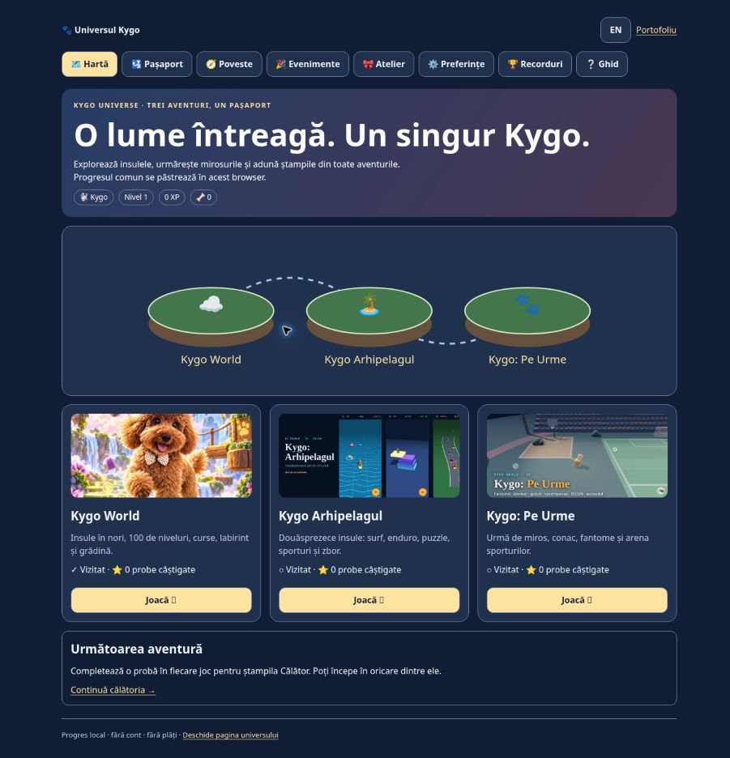

Trei jocuri independente.
O călătorie comună.
Universul Kygo conectează Kygo World, Kygo Arhipelagul și Pe Urme fără să înlocuiască motoarele, nivelurile și salvările existente.
Kygo Universe connects three independent games through a local passport, shared preferences and verified clear events. Each engine keeps its native gameplay and inventory.
Problema / Problem
Legăturile simple permiteau navigarea, dar progresul, preferințele și realizările rămâneau separate. O schimbare de limbă putea chiar rescrie adresa primului link către aventura greșită.
Simple links did not connect progress or settings. A generic link selector in the language handler could overwrite the wrong destination.
Ce funcționează acum / Delivered behavior
- Hub RO/EN, hartă SVG accesibilă și trei carduri de aventură.
- Pașaport, XP, realizări, campanie cu trei capitole și obiective verificate din joc.
- Provocări zilnice și săptămânale, recompense unice și rejucare sezonieră.
- Atelier de pașaport, previzualizare, confirmare și decorarea insulei.
- Trei profiluri locale, backup complet validat și recuperare după import.
- Preferințe comune, taste configurabile și preset cu o singură mână.
- Recorduri locale cu asistența identificată și card de rezultat PNG.
Moduri, comenzi și accesibilitate / Modes, controls and accessibility
| Joc / Game | Moduri / Modes | Comenzi / Controls | Accesibilitate / Accessibility |
|---|---|---|---|
| Kygo World | Poveste / Story, curse / racing, campionat / championship, endless, labirint / maze, comoară / treasure, grădină / garden, Duo, Zen | Săgeți / Arrows, WASD, Space, Shift, P; touch, joystick | Hartă text / Text map, contrast, mișcare redusă / reduced motion, mod sigur / safe mode, scanare / scanning |
| Arhipelagul | 12 insule / islands; niveluri / levels, endless, daily, weekly, gauntlet, challenge codes | Săgeți / Arrows, WASD, Space/B, P; touch, gamepad | Contrast, mișcare redusă / reduced motion, fără eșec / no-fail, scanare / scanning, viteză / speed |
| Pe Urme | Conac / Manor, Arenă / Arena; Aventură / Adventure, Plimbare / Walk | Săgeți / Arrows, WASD, B, E/Enter, Space, P; joystick, urmărire / auto-follow | Narațiune / Narration, subtitrări / captions, indicii de miros / scent cues, daltonism / colour vision, un singur buton / one-switch |

Decizii tehnice / Technical decisions
Un modul comun folosește adaptoare explicite pentru fiecare motor. Vizitele sunt separate de victorii; o probă nouă acordă o singură recompensă. Salvările istorice sunt recunoscute cu o dată de migrare, fără să genereze victorii pentru evenimentul zilei.
A shared module uses explicit engine bridges. Visits never count as wins. Unique stage IDs prevent repeated reward farming. Historical clears use a migration date rather than counting as today's event.
Backupul admite numai cheile Kygo cunoscute, validează structura înainte de scriere și încearcă revenirea la datele anterioare dacă spațiul browserului se epuizează. Profilurile sunt locale, iar exportul este separat pentru fiecare profil.
Backups allowlist Kygo storage keys, validate before writing and roll back on write failure. Profiles are local, and each profile is exported separately. Browser-local scores are unsuitable for trusted public leaderboards.
Verificare și limite / Validation and limitations
Testele de logică acoperă recompensele unice, protecția cumpărăturilor, validarea importului, rollbackul, separarea profilurilor și datele Europe/Bucharest. Panoul comun a fost verificat în browser în toate cele trei jocuri: profil, RO/EN, contrast, schimbare profil, recompensă și decorare.
Logic tests cover unique rewards, duplicate purchase prevention, import validation, rollback, profile isolation and Bucharest dates. Browser checks cover the shared panel in all three games, remapping a pause key, and a real World stage clear appearing in the shared result history. A physical phone, real screen reader, full offline run and live GPU context-loss recovery remain unverified.
Nu există încă sincronizare online, clasamente publice validate, camere private, galerie moderată sau multiplayer. Acestea necesită un backend. Costume comune 3D, portaluri în scene, noi vehicule și un final mixt separat nu au fost implementate în această versiune.
No online sync, validated public leaderboard, private room service, moderated gallery or real-time multiplayer is included. Shared 3D outfits, in-scene portals, new vehicles and a separate mixed final stage also remain to implement.
Starea exactă a tuturor celor 126 de puncte / Exact status of all 126 items →